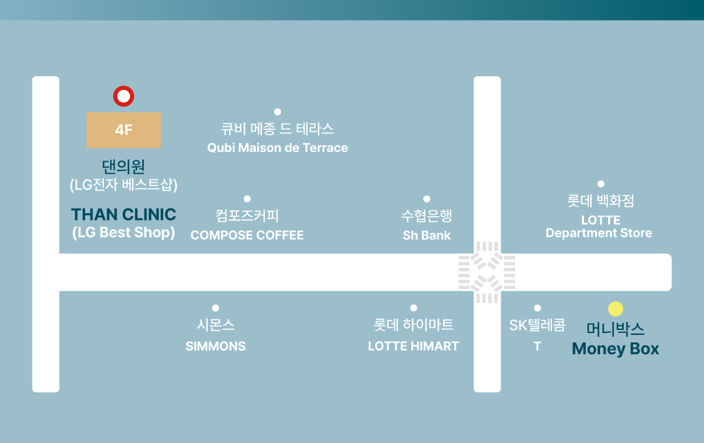

문의하기 Inquiry


오시는 길 Location

찾아오시는 길
창원시 성산구 중앙대로 100번길 13 4층 (CGV 창원상남 건물 4층)
Address
4F, (CGV Changwon Sangnam), 13 Jungang-daero 100beon-gil, Seongsan-gu, Changwon-si
전화 문의 Phone Inquiry
전화번호: 055-286-7579* 한국 국가번호 +82가 자동으로 적용되어 통화 연결됩니다.
* The Korean country code +82 is automatically applied to connect the call.